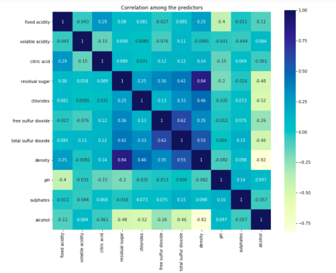
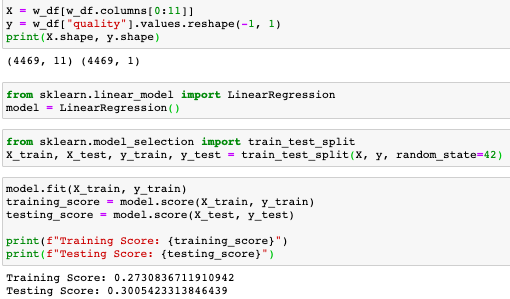

Build a regression model that predicts the quality (target)
of white wine based on it’s physicochemical properties (features/dimensions). Quality is rated on a scale of 1-10.
Cleaning the white wine dataset
After removing missing values from the dataset, we needed to identify and remove outliers
that could skew the analysis. Removing outliers shrunk our dataset from 4898 to 4469 values..
Testing assumptions for Multiple Regression Analysis

Through a variable inflation factor analysis and seaborn heatmap, we assessed how
codependent the factors were with one another (excludes the target, quality). Density and residual
sugar were the most correlated (0.84), closely followed by volatile and citric acidity (13, VIF).
This finding influenced the decision to run a principle component analysis (pca) to strategically
decide which features(dimensions) could be reduced to strengthen the model. Additional assumption
testing not featured below included linearity testing through scatter plots/correlation analysis
and creating residual plots.
Multiple Regression Analysis

The first MR model used all 11 factors, scaled using MinMaxScaler, with a testing score of 30%.
The second model used the Principle Component Analysis to transform the existing factors to two factors
(reducing dimensionality). While this appeared fruitful, the new pc’s resulted in a weaker model (0.00),
mostly predicting “6”.
Original Regression
Three types of ordinal regressions were tested (logistic, ridge and least absolute deviation). The ordinal
regression was a natural fit since the target variable is ordinal. However, only one of the model’s came close
to being highly predictive (logistic, 52%).
Model Summary
The original regression model proved strongest (testing score: 52%), although it is still relatively weak for a predictive model.
This make’s sense since the target variable is ordinal, not continuous. For the purpose of this exercise, 52% is enough to show some predictive
capability, but ultimately the physicochemical properties aren’t strong predictors of the wine’s quality. More information is needed on what
determined the wine quality.
Additionally, there may be better fitting models beyond regression (Random Forest, Classification). These weren’t explored because the main
objective of the project was to predict the type of wine, not wine quality.
Regarding the sub objectives mentioned at the beginning of the notebook, alcohol (44%) and density (-31%) influence wine quality most, while
citric acid has no effect (0%).
Model Summary
For each model, data was split into training and testing data and were scaled and normalized using MinMaxScaler, which
transforms each feature so that it lies within the range 0 and 1.
Multiple Linear Regression: With Scikit-Learn, we created a model using Linear Regression, fitted the model to the training data,
and quantified the model using the scaled data. Score came out to ~0.372, which is very low and weak.
Proceeded to try other linear regression models, specifically Lasso, Ridge, and Elastic Net to see if we could improve our performance.
“Lasso will eliminate many features, and reduce overfitting in your linear model. Ridge will reduce the impact of features that are not
important in predicting your y values. Elastic Net combines feature elimination from Lasso and feature coefficient reduction from the Ridge
model to improve your model's predictions.”
However, results were not any better than what we got initially with our multiple linear regression model.
Next, we thought outliers could be an issue so we removed outliers and conducted the multiple linear regression model again to see if
our model performed better. It only improved by 0.01, making no significant difference.
Looking back to the seaborn heatmap we had created earlier, we noticed that there was some correlation between variables, and to address
any multicollinearity in our dataset, we tested Principal Component Regression. Again, no difference in score.